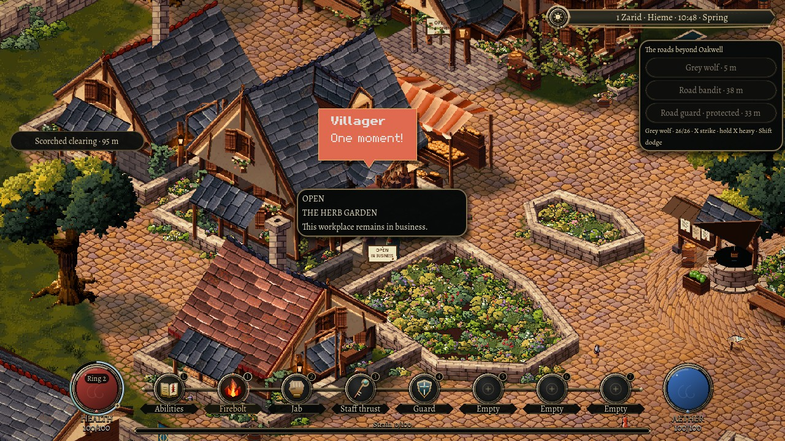
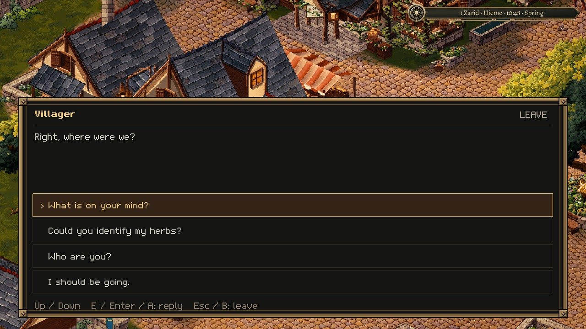

2 November 2026
When the hammer stops
A town starts to feel alive when its people have reasons to stop what they are doing.
That matters for Sprawl's first proper playtests. Gathering, trade and fighting need to fit into the same place. If a resident keeps working or chatting while a fight approaches, the town stops being convincing at exactly the moment it should become interesting.
The first implementation for this milestone gives Oakwell's residents a local response to nearby fighting. They need to see an active threat, at a sensible distance and height. A peaceful guard is still a peaceful guard. A fight on the other side of town does not magically tell everyone to go home.
An alarm interrupts the resident's work and conversation. They try to reach their own mapped home through the town's actual doorways. The route also has to keep clear of the danger they observed. If the shortest path is unsafe, they look for a longer way around. Someone already too close can move away; an apparently convenient path through the attacker is refused.

There is no promise of a safe route every time. If the way is blocked, the resident pauses and tries again. They are never moved through a wall or placed inside a house to make the result look right.
Getting indoors does not erase the rest of their life. Their scheduled destination and unfinished work stay attached to them. After a short period without another observation, they can return to what the current hour calls for. If their day changed while they were away, they follow that newer routine.
Conversation does not freeze the fight. A threat can approach while someone is talking, and the interruption releases both people to act. After sustained quiet, a small speech bubble offers the unfinished conversation again. The player chooses whether to return. Any offer of a service is checked afresh.

The native rehearsal now covers interruption, the walk home, return to work and choosing to pick up the conversation. Equipped defence and remembered protection remain later work. The next wider proof is a connected outing: learn what someone needs, prepare, venture out, return with something useful, and see the result survive leaving and coming back.